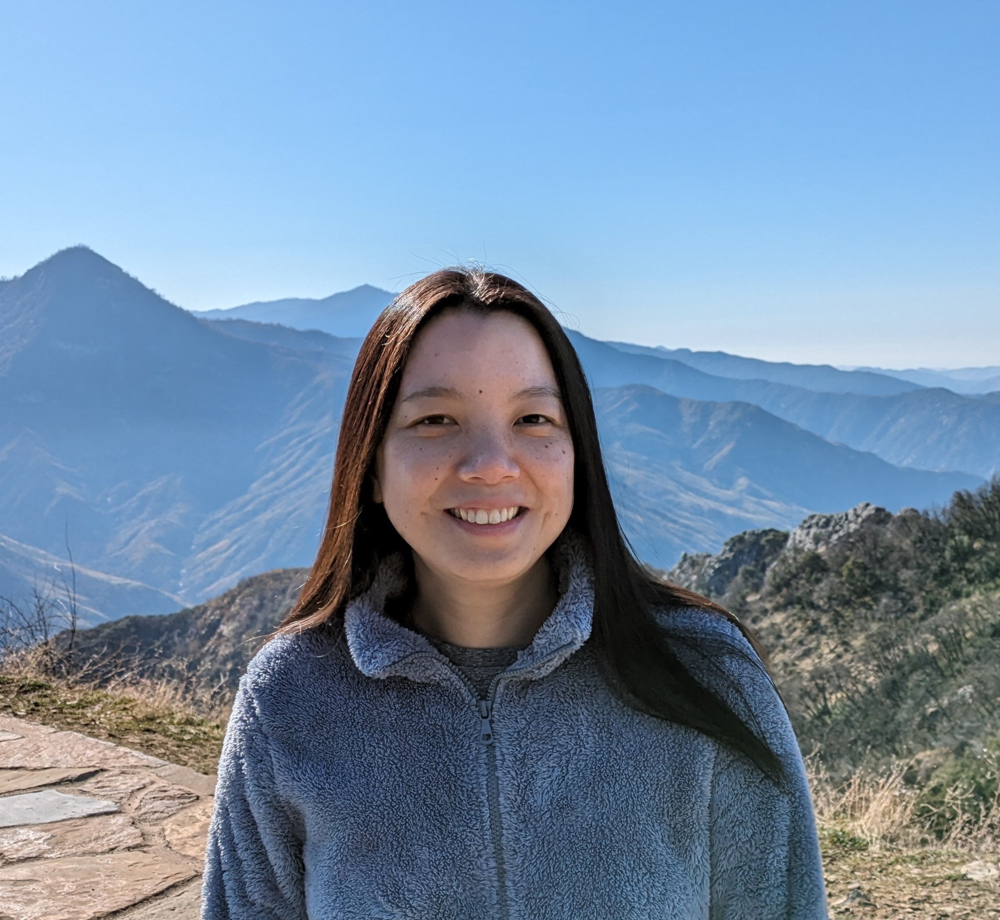

June Wu
jqw AT uchicago DOT edu
I am a PhD student at UChicago advised by Madhur Tulsiani. My research interest
Before that I received my BA and MS in Mathematics from NYU Courant.
Research:
Ellipsoid fitting up to constant via empirical covariance estimation
[arXiv]
with
Madhur Tulsiani,
Manuscript.
Adiabatic entangling gate of Bose-Einstein condensates based on the minimum function
[arXiv]
with
Sergi Ortiz, Yilun Song and Tim Byrnes,
Phys. Rev. A 98(043616), 2018.
Template borrowed from John Urschel.